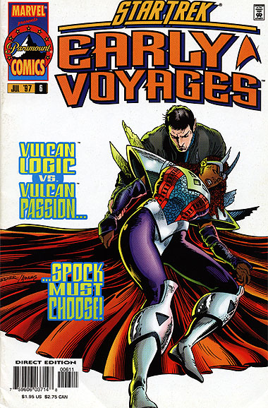
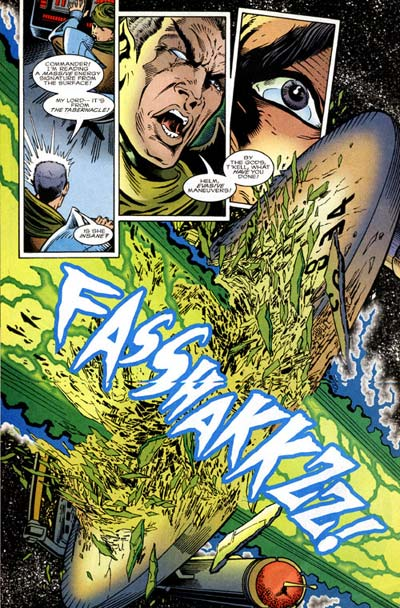

|


|
Gnese
| Episdios I Reflexes
| Palavras do autor | Palavras
do artista Star Trek
Early Voyages, n 06 julho de 1997  Histria: Dan Abnett e Ian Edginton Material produzido por Salvador Nogueira para o Trek Brasilis
Data Estelar: 2396.6 Sinopse: O disparo da arma Tol Par-Doj causou srios danos Enterprise, incluindo a queda de seus escudos. Indefesa, a nave sofreu uma abordagem pelos Vulcanos rebeldes, liderados pelo comandante Tagok. Os tripulantes resistem bravamente invaso, conseguindo cont-la, a custo de cinco mortos e 29 feridos. Antes que a Cortez pudesse novamente voltar a atacar --o que seria fatal para a Enterprise--, a Nmero Um instruiu Jos Tyler a baixar os escudos da nave adversria remotamente. Mohindas ento disparou torpedos fotnicos contra a Cortez, desativando seu sistema de gravidade artificial. Enquanto os Vulcanos tentam contornar os danos, a equipe snior da Enterprise se rene para debater uma sada da presente crise. Enquanto isso, Pike e seu grupo de descida so mais prisioneiros do que "convidados". T'Kell revela a ele que pretende usar a Enterprise para a fuga de seus comandados, depois que uma antiga arma Vulcana at ento nunca construda, a Vorl-Tak, destruir a Cortez e, junto com ela, seus inimigos rebeldes. Spock conta a Pike do que se trata a Vorl-Tak --uma arma que usa a fora gravitacional de um planeta como amplificadora de poderes psinicos. Ela no s devastadora contra quem usada, como causa o colapso do prprio planeta em que est instalada. T'Kell quer dispar-la contra a Cortez. Caso no atinja o alvo, mesmo assim o planeta ser destrudo, acabando com as intenes de Tagok e seus subordinados de permanecerem por l. Spock tenta dissuadir T'Kell de usar esse recurso, argumentando que o equipamento poderia ser desmontado para a construo de uma nave que levasse seu povo para fora de l. A matriarca est irrelutante. Ela ordena o disparo, que faz a Cortez em mil pedaos. Enquanto isso, Pike volta Enterprise em sua nave auxiliar, para preparar o resgate do povo de T'Kell, acordo que ele aceitou base de chantagem. O planeta est se desfazendo, o povo de T'Kell est morrendo, e a interferncia impede o teleporte do grupo de descida da Enterprise de volta nave. Pike ordena que a Enterprise entre na atmosfera, para que seja atingido o limite de alcance do transporte naquelas condies. Os membros do grupo de descida so resgatados, mas nada se pode fazer pelos Vulcanos. Enquanto a Enterprise se recupera do incidente, Spock decide que os Vulcanos esto melhores sem emoes devastadoras. Em razo disso, ele inicia um processo para eliminar o que ainda resta de seu lado humano.  Comentrios Se a primeira parte da histria deu alimento ao personagem Spock, a segunda parte ainda mais contundente. Ela explica de forma clara o porqu de o Spock de "The Cage" ainda apresentar vrios traos de seu lado humano, sorrindo no planeta e gritando a bordo da nave, enquanto sua verso posterior, vista durante a Srie Clssica, ser muito mais austera e livre de emoes. Segundo "Early Voyages", acabamos de ver o episdio que iniciou esse dio interno de Spock por seu lado humano. Tirando esse grande arco para o nico personagem realmente conhecido da srie, no h grandes destaques. A histria em geral um pouco mais forada do que deveria, com armas Vulcanas to devastadoras que chegam s beiras do inacreditvel. A estratgia de baixar remotamente os escudos da Cortez pode ter sido uma novidade para a tripulao da Enterprise em 2254 --mas para os fs de Jornada, j conhecida desde 1982, quando foi usada por Kirk em "A Ira de Khan". E se no filme a manobra parece inovadora e brilhante, aqui mostrada de forma corriqueira e pouco emocionante. Faltou criatividade. Essa segunda parte mais voltada para ao do que para os personagens, diferentemente do que aconteceu na primeira parte. Aqui temos boas sequncias de adrenalina, como a abordagem da Enterprise e a batalha espacial, que do o tom do enredo. Entretanto, temos algumas frases muito bem escritas, como o momento em que a Nmero Um diz que "ningum baguna minha nave no meu turno", ou Spock relata a Pike que "minha perspectiva nisso no diferente do que a sua seria se tvessemos descoberto uma colnia dos guerreiros eugnicos de Khan ou dos nazistas de Hitler". A arte continua excelente como de costume, mas dessa vez apresenta um 'blooper': numa das cenas, a Enterprise claramente apresenta o cdigo de registro "NCC 1707"! Apesar do excesso de complicao, a histria no chega a se perder em nenhum momento e no deixa muitos ns desatados, embora a m vontade de Pike em no salvar os Vulcanos emotivos quando a Enterprise parte em resgate do grupo de descida seja um pouco incmoda.
|